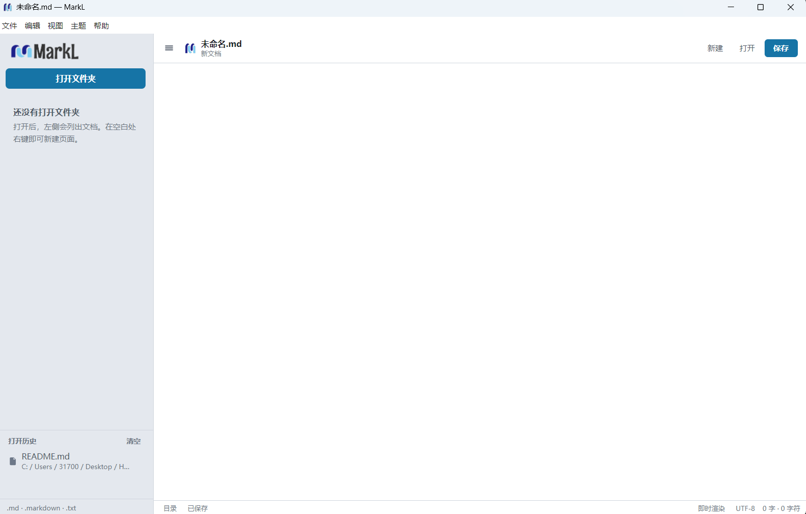

Haiyu Information · Release 1.0.1
像写纸稿一样写 Markdown
MarkL 面向中文作者：打开就是一篇正在排版的文档，不是左边源码、右边预览的两页纸。 文件树管目录，灰框代码带语言标签和高亮，写完可以导出独立 HTML。

Features
功能说明
下面按你实际会用到的顺序写，和当前 1.0.0 桌面端一致，不是规划清单。
-
1. Typora 式即时渲染
默认单栏。输入
#加空格就是标题；列表、引用、表格、链接、图片马上排出来。支持 HTML 片段。可一键切到 Markdown 源码再切回来。正文跟窗口变宽，不再锁在中间一条窄栏。 -
2. 代码块：语言、灰框、高亮、格式化
- 输入三个反引号后回车，弹出语言列表；可搜
java、js、py等别名。 - 选定后灰框顶部出现语言标签，关键字带颜色。
- 光标在框里边写边亮；点到外面，灰框里的颜色会留下来。
- Ctrl+Alt+L 格式化当前代码块。JS / TS / JSON / CSS / HTML 走 js-beautify，其余按缩进整理。
- 输入三个反引号后回车，弹出语言列表；可搜
-
3. 文件夹工作区与文件树
- 打开文件夹后列出
.md/.markdown/.txt，空目录也会显示。 - 点击展开文件夹、打开文档；当前文件高亮，未保存有红点。
- 右键可新建文档、新建文件夹、重命名、删除、在资源管理器中显示。名字在树里直接改。
- 扫描上限 16 层、2500 项；跳过
.git、node_modules、dist等目录。
- 打开文件夹后列出
-
4. 打开历史
文件树下方记录最近打开的文件和文件夹，最多 16 条。点击重新打开；路径没了会自动剔除。可以单条删除或全部清空。记录存在本机，不上传。
-
5. 保存、另存为、未保存保护
新建、打开、保存、另存为都有菜单和快捷键。切换文件或退出时，若有未保存修改会中文确认。文档按 UTF-8 读写。安装后可双击
.md/.markdown用 MarkL 打开。 -
6. 导出 HTML
「文件 → 导出 HTML」生成带基础样式的独立网页：标题、段落、表格、灰底代码块都在，发给别人用浏览器就能看。
-
7. 浅色 / 深色主题
菜单「主题」切换，选择会记住。侧栏、正文、代码框、语言弹窗、状态栏一起变，不会只换背景漏掉字。
-
8. 状态栏与目录栏
底部显示保存状态、即时渲染或源码、UTF-8、按中文习惯统计的字数和字符数。Ctrl+B 收起目录栏；窄窗口里目录栏改成抽屉。
-
9. Windows 桌面身份
任务栏和跳转列表写的是 MarkL，不是 Electron。安装包可加桌面 / 开始菜单快捷方式，并关联 Markdown 文件。同时提供安装版和绿色版。
Languages
代码语言
三个反引号回车后可搜中文说明、正式名或别名。
| 语言 | 别名 | 说明 |
|---|---|---|
| JavaScript | js, node | 网页与 Node.js |
| TypeScript | ts | 带类型的 JavaScript |
| Java | java | Java 代码 |
| Python | py | Python 脚本 |
| HTML | markup, xml | 网页标记 |
| CSS | css | 网页样式 |
| JSON | json | 结构化数据 |
| Shell / Bash | sh, shell | 命令行脚本 |
| C / C++ / C# | c, cpp, cs | 系统与 .NET |
| SQL / Go / Rust | sql, golang, rs | 数据库与系统语言 |
| Markdown / 纯文本 | md, txt | 文档或不做高亮 |
Keyboard
快捷键
| 按键 | 作用 |
|---|---|
| Ctrl+N | 新建文档 |
| Ctrl+O | 打开文件 |
| Ctrl+Shift+O | 打开文件夹 |
| Ctrl+S | 保存 |
| Ctrl+Shift+S | 另存为 |
| Ctrl+/ | 即时渲染 ⇄ 源码 |
| Ctrl+B | 显示或隐藏目录栏 |
| Ctrl+Alt+L | 格式化当前代码块 |
| ↑ ↓ Enter Esc | 选择或关闭代码语言 |
Download
下载
exe 已经放在 GitHub Release 1.0.1，Windows 10 / 11 64 位绿色版，下载后直接打开。
- MarkL.1.0.0.exe — 绿色版，约 75 MB
发布页：1.0.1。macOS 需要在 Mac 上运行 npm run build:mac，或走仓库里的 GitHub Actions。